候補は BulletML の DTD から出しているので、その場所に置けるものしか出ない。 打っている途中で本文が壊れていても止まらない。
表記のプルダウンで XML・sxml・fsb・F# の CE を切り替える。 はじめの 3 つ は語彙が同じで、変わるのは書き方だけ —— XML の <fire label="a"> が sxml では (fire (@ (label "a")))、 fsb では fire label="a"（入れ子は行頭の空白で決まる）。 切り替えると、いまの本文がその表記に書き直される。 プルダウンの弾幕を読み直すのではなくいまの本文を変換するので、 自分で足した字も残る。読めない本文のときは触らずに理由が出る。
<fire label="a">
(fire (@ (label "a")))
fire label="a"
F# の CE でも 4 表記 と同じものが出る。 書くのは要素名ではなく DSL の名前（top / defAction / actionRef）で、置ける場所が入れ子で決まる —— 候補はその場所に置けるものだけを出す。 repeat の中は action の中と同じものが置ける。
top
defAction
actionRef
repeat
action
hover は CE でも出る。 名前の上に置くと、 それが BulletML の何を作るかと、その仕様が出る —— defAction なら <action>、 aim なら <direction> と type="aim" の 2 つ。 vertical のように2 つ の意味を持つ名前は両方出る （根の画面の向きと、accel の中の縦の加速度）。 文字列やコメントの中では出ない。
<action>
aim
<direction>
type="aim"
vertical
accel
CE で出ないものは 3 つ だけ（v4.8 で 13 本 の口を 4 表記 に当てて数えた）—— 式の値と引数の形、 そして走行に紐づく印 （走っている場所・出どころ・撃った数・系譜・重さ）。 前の 2 つ は「引数の何番目 が式か」を字から言えないため、 後ろは CE の入れ子が { } の段で 要素の入れ子と別物のため。 補完・hover・F2・F12・波線・整形・ 参照の数はほかの 3 表記 と同じ 1 本 を通る。 アウトラインも出るが、別の木になる（下に書いた）。
{ }
direction
4 つ の表記が全部 書けて、hover は 4 つ とも出る。 候補・F2・F12・Ctrl+.・ アウトライン・折りたたみは 4 表記 とも出る。
<
(
fire
wait
bullet
<fire>
(fire)
(@ (
type=""
(type "")
"
type
absolute
relative
sequence
$
$rand
$rank
speed
候補は「その場所に置ける要素」を出すが、 「N 方向 に撃つ」のような形は要素 1 つ では出ない。 そこを埋めるのが雛形で、骨ごと入る —— <action> の中で 6 つ、<bulletml> の直下 で 2 つ。
<bulletml>
direction type="sequence"
穴には既定値が入っている。 Tab で次の穴へ移る —— 埋めずに走らせても弾幕として成り立つ （$1 は BulletML の式として正しく読めてしまうので、 空の穴を作っていない）。
$1
()
""
</fire>
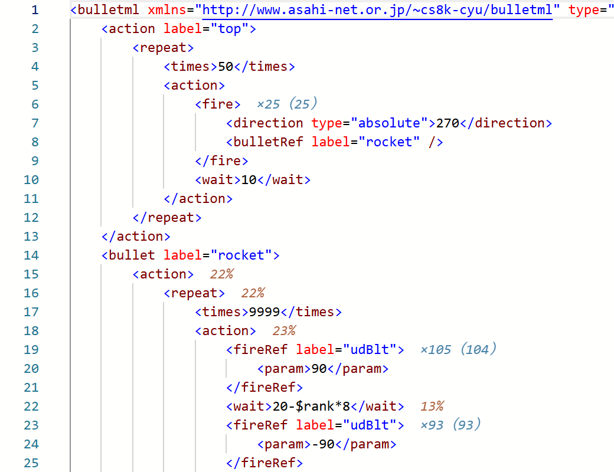
actionRef label="shot"
label
action label="a"
actionRef label="a"
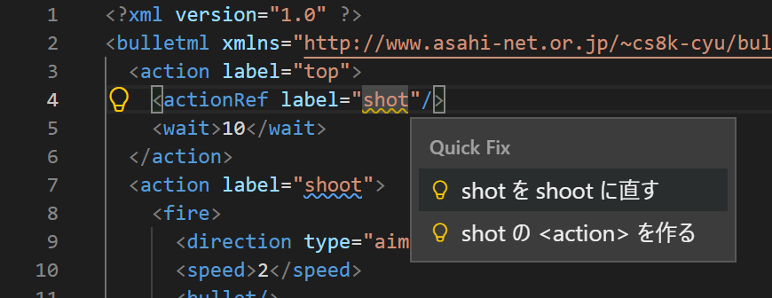
shot
shoot
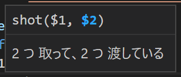
<param>
<actionRef>
<bulletRef>
$n
$3
0
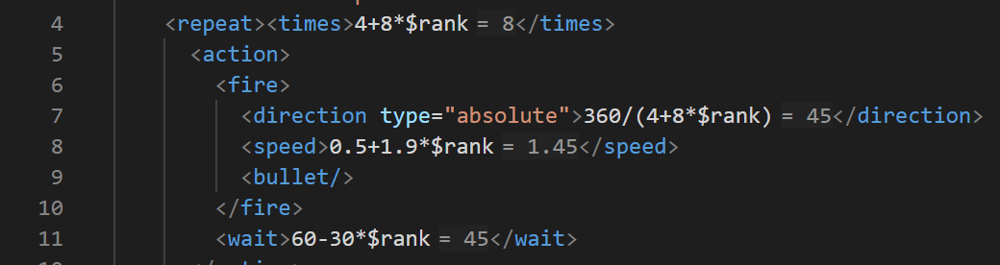
<times>4+8*$rank</times>
<wait>30</wait>
= 30
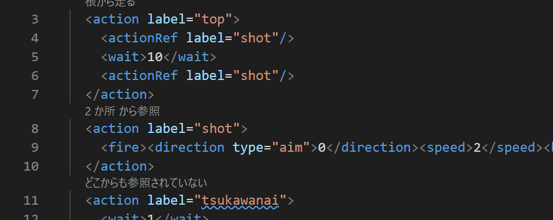
<action label="…">
doActs "x"
打鍵 1 回 の合計は 5.6 ミリ秒（いちばん長い弾幕 29,190 字。ブラウザの中で測った）—— 60 コマ/秒 の 1 コマ（16.7 ミリ秒）の 33%。 上に並んだ検査は同じ本文の走査を使い回すので、 1 本 ずつの値段を足した数（10.7 ミリ秒）の半分 で済む。
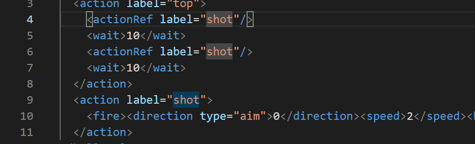
action label="shot"
action top
symbols (11)
▶|
追跡: 102 行 の wait（stop 2 / 鎖 1 / 道 1）
<wait>
changeSpeed
stop
鎖
道
<bullet>
追跡: 再開点なし
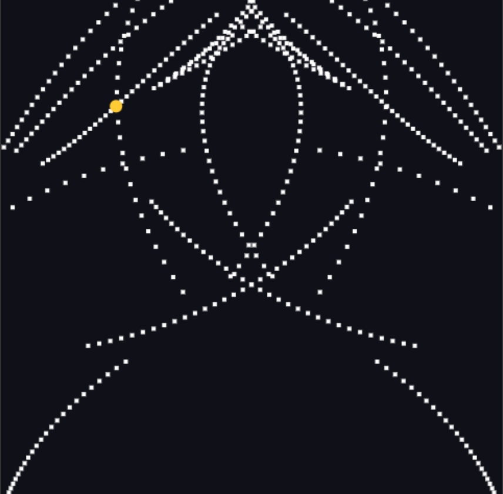
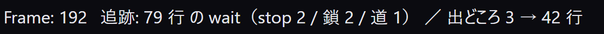
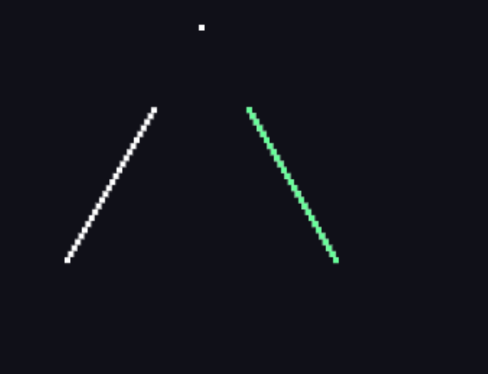
／ 出どころ 85 行
<fire ...>
<bullet><action>
出どころ 6 → 23 → 34 → 51 行
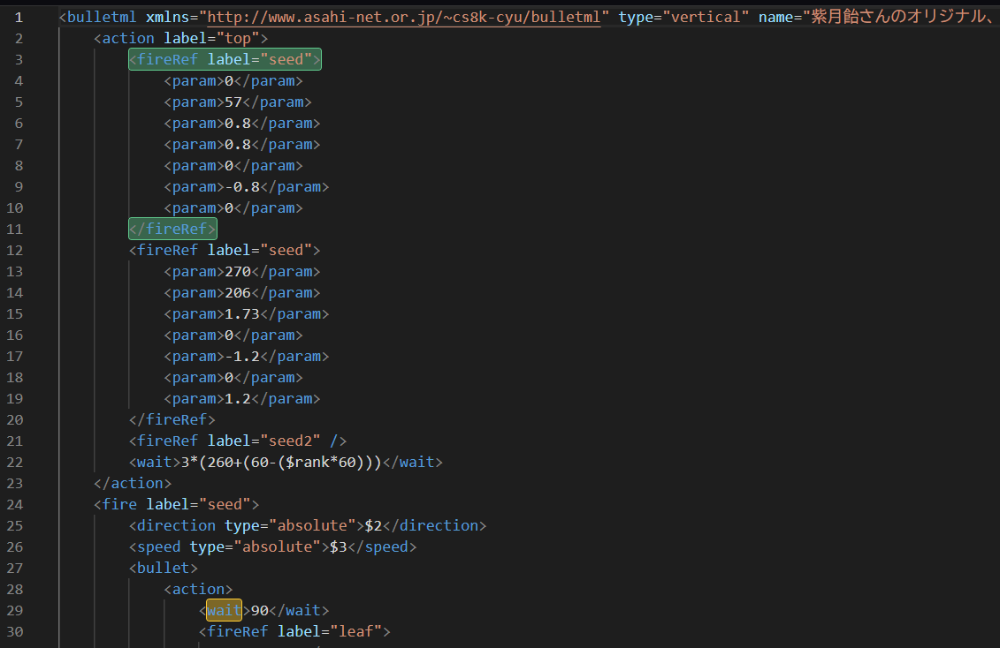
<fireRef ...>
</fireRef>
◯◯Ref
nai
tsukawanai
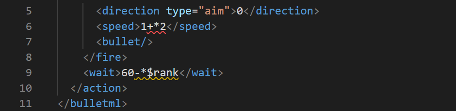
<speed>
horizontal
term
times
param
<wait>1+*$rank</wait>
+ - * / %
+
+1
1E-07
actionRef "shot"
"shot"
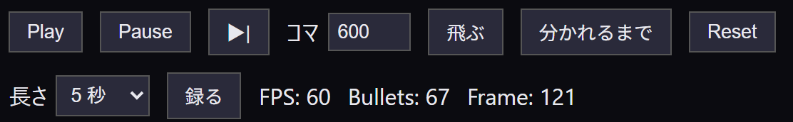
Frame
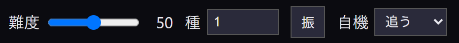
<bulletml type="horizontal">
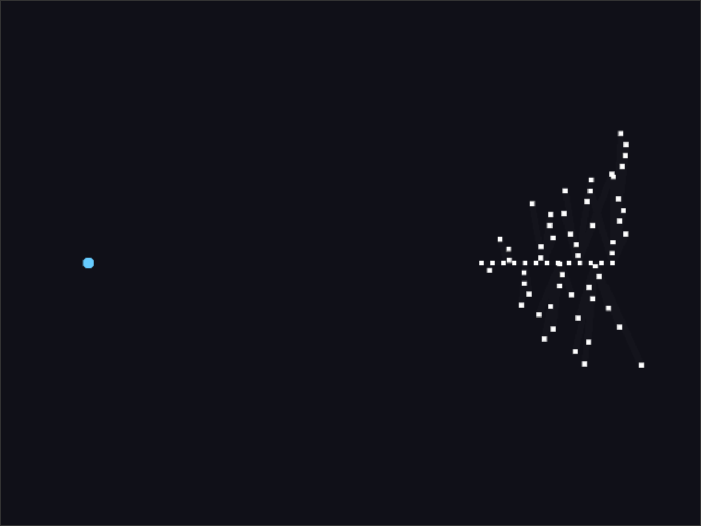
type="horizontal"
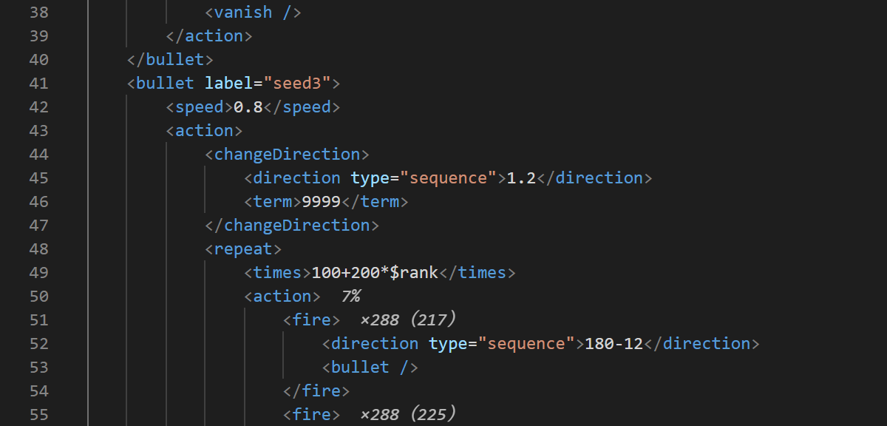
×288（217）
7%
×24（12）
Bullets:
×0（5）
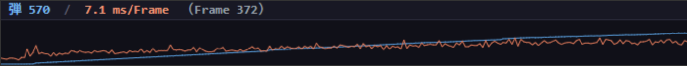
7.4
8.0
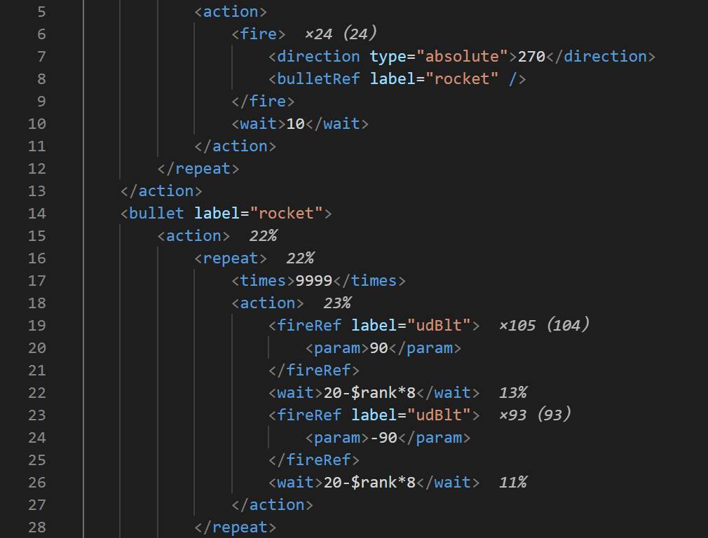
×24（24）
32%
31%
63%
<wait> 13%20-$rank*8</wait>
fireRef
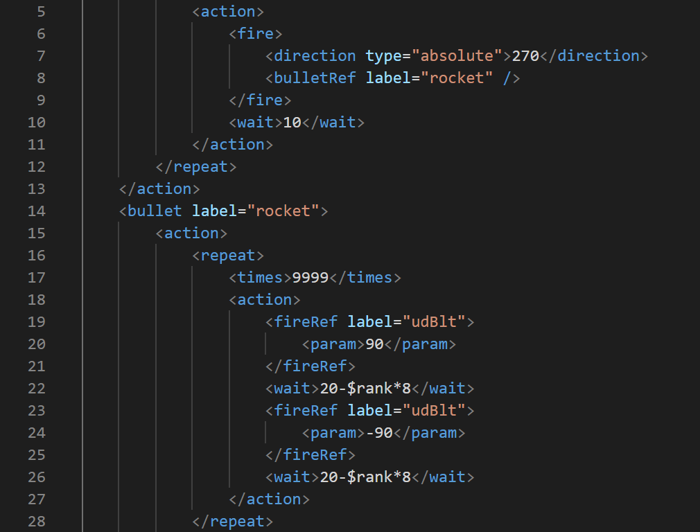
×
％
23%
1 面 / 2 面
[Progear]
.sxml
.fsb
.fsx
#
前の続きから
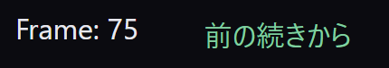